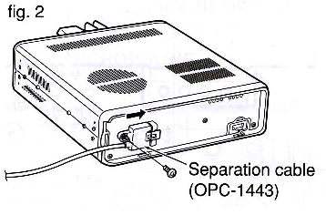
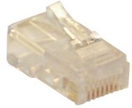
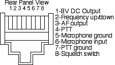
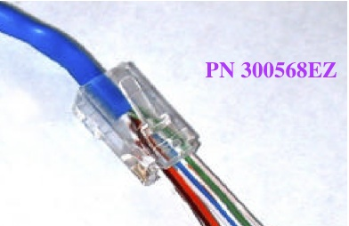
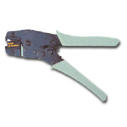

Basics
Information on power wiring is covered in the Wiring article, including proper fusing, splicing, shortening, and crimping connectors. Minimizing voltage drop is also covered there. This article focuses on signal cables: microphone cords, remote control cables, and the modular connectors used for interfacing to computers, antenna controllers, and amplifiers.
Microphone cords tend to be brand-specific. Unfortunately, too many of them look like CAT5 cables, prompting people to use CAT5 as a cheap substitute for the more expensive factory units. Sometimes this works. Sometimes it doesn't. And sometimes it damages the transceiver. Always use the correct, manufacturer-supplied cable.
All HF mobile transceivers — and quite a few FM ones too — have ports designed to connect to the outside world. They're meant to interface transceivers to programming computers, antenna controllers, amplifiers, and even the Internet. No two brands are alike. The ports (sockets) are different between manufacturers, and in many cases between models from the same manufacturer. Use manufacturer-supplied cabling wherever possible.

Remote Cables
While DC cabling doesn't need to be shielded, most other amateur radio cabling is shielded — for very obvious reasons. Some enterprising amateurs think it's acceptable to use Ethernet CAT5 cable for their interconnections. It isn't.
CAT5 is not 8 separate strands — it is 4 pairs, each pair separately twisted at different pitches. Depending on the use and how it's wired, crosstalk between conductors is almost a given. Ready-made CAT5 cable assemblies come in several wiring configurations, including crossover cables that can short the regulated supply to ground. Using a ready-made CAT5 cable in your mobile might work. Then again, it might not — and you'll be facing an expensive repair.
You can buy shielded CAT5 cable, but the vast majority of it uses solid conductors. Solid-conductor cable should never be used in a mobile environment where constant flexing and vibration will fatigue and eventually break the conductors.
MFJ Interconnect Cables
A similar caution applies to MFJ's interconnect cables, like those supplied with their ALS-500 amplifier remote kit. These are 8-conductor silver satin telephone cables, but the connectors are installed differently from standard telephone cables — they're straight, not crossed over. This is one of the very few cases where you can shorten them and install a new RJ45 plug with a standard telephone crimp tool, as long as you observe the polarity.

Proprietary remote cables should never be lengthened. Doing so is a reliable way to destroy a $50 cable. If a longer cable isn't available, rethink your mounting locations. Unlike power cables, remote cables are subject to common mode problems. Ferrite chokes work very well here when multiple turns are used — see the Common Mode Currents article.
Icom IC-7000/IC-706 Grounding Screw
There is a very important caveat for IC-7000 and older IC-706 installations. Make sure the grounding screw for the remote cable is installed. It is very small (2 mm x 6 mm) and is depicted on page 16, center drawing, Figure 2 in the IC-7000 Owner's Manual. Leave it out and you're in for major RFI problems. The IC-706 cable is slightly different but the same caveat applies.
Modular Plugs & Jacks
A lot of newer transceivers use modular jacks and plugs for microphone and/or remote cables. While they appear to be standard RJ45 telephone connectors, they typically are not. Modular jacks and plugs come in about 50 different configurations: some for round cables, some for oval cable, some for flat cables, and different types for solid and stranded wire. There are keyed and unkeyed versions, ones with external cord grips, and ones for heavy-duty use. Selecting the correct one isn't as simple as it looks.

MFJ and a couple of other manufacturers use RJ45 telephone-style jacks, plugs, and silver satin 8-conductor telephone wire as interconnect cabling. The problem: they aren't wired like telephone cables. Arbitrarily substituting a telephone cable will result in an expensive repair.
The crimping tools required for the various types are also different. A tool designed for round cable will not properly crimp a flat cable, and one designed for flat cable can actually cut through a round cable.
Icom Microphone Jack Details
The pins in Icom's microphone jack are approximately 1/32 inch apart. If you're not precise, you may not be able to properly position and hold the wires during crimping. First attempts often go through several plugs before getting it right.
The microphone input on the IC-7000/7100 has an 8V DC regulated supply on pin 1. Shorting this pin to ground will cause the 8V regulator to instantly fail. Shorting pin 1 to other pins can cause both the series resistor and the 8V regulator to overheat and eventually fail. Both are surface-mounted devices requiring special tools to replace. The same regulated supply exists on Yaesu and Kenwood transceivers. The maximum current for the 8V line and the squelch switch sink is 10 milliamps — it is not intended to power ancillary equipment like TNCs.
Pin 3 on the IC-706MkIIg is the audio output. On the IC-7000/7100, this pin is used as a microphone "sense" pin that tells the radio an HM-151 stock microphone is attached. Plugging in a Heil headset designed for the IC-706 causes the radio to think it's an HM-151. The required audio input levels are very different, so the transmitted audio will be distorted.
Pin 2 on the IC-7000/7100 is a multipurpose input. Shorted to ground during receive, it causes the frequency to go up. A 470-ohm resistor in series to ground causes the frequency to go down. In CW mode, a 3.9k ohm resistor to ground is the dit side of the paddle (or straight key), and a 2.2k ohm resistor is the dah side.
Icom makes an adapter to convert the microphone jack from modular to a standard 8-pin microphone jack for use with their SM8 and other desk microphones. If you're interfacing through the microphone port of an IC-7000/7100, note that the radio has two microphone ports, but using both simultaneously can cause data corruption.

If You Just Have to Make Your Own
Making your own modular extension cables is not suggested in the first place, since most are proprietary material and configuration. Pre-made telephone cables and splices aren't the answer either. Ethernet cables come in straight and crossover configurations, and although their splices look like telephone splices, they're not wired the same. This is one area of amateur radio where you shouldn't scrimp — the potential damage costs far exceed the procurement costs of most cables.
If you must proceed, DigiKey and Mouser sell the proper modular plugs, listed under Modular Connectors and Jacks. There are about 20 different configurations catalogued, and another 25 or so they don't list.

Do not use the inexpensive Radio Shack-type crimpers for Ethernet-style connectors. They're designed for flat, stranded telephone cable (silver satin), and they'll tell you it's acceptable for Ethernet cable — it isn't. These tools will not properly crimp connectors when solid wire is used, and if you squeeze hard enough as the instructions suggest, you risk separating the insulation and causing shorts, to say nothing of breaking the plastic handles. Quality crimping tools from AllenTel range from about $75, which is not inexpensive — but quality never is.
Always check connections for continuity and shorts before attaching cables to your hardware. A pair of pre-wired jacks is a useful tool for checking continuity. Ensure the wire is properly restrained by the strain relief. Take your time.
Modern Considerations
USB and Serial Interfaces
Modern transceivers increasingly use USB for computer interfacing — for logging, digital modes, programming, and remote control. USB cables are standardized in a way that RS-232 serial cables never were, which simplifies the physical connection. However, USB cables carrying data between the transceiver and a computer are still subject to common mode current problems when routed inside the vehicle. Ferrite chokes with multiple turns on USB and serial cables are effective and often necessary.
Bluetooth and Wireless Interfacing
Several transceiver manufacturers now offer Bluetooth microphone adapters and Bluetooth programming interfaces. Bluetooth operates at 2.4 GHz — well above the HF amateur bands — so the RF coexistence issue between Bluetooth and HF operation is minimal. The more practical concern is latency: Bluetooth introduces audio latency that makes digital modes and CW operation awkward. For voice operation, Bluetooth microphone connections are generally fine. For anything timing-sensitive, stick with wired connections.
CAT Control and Transceiver Networking
Computer-aided transceiver (CAT) control via RS-232 or USB allows logging software, antenna controllers, and digital mode software to query and command the transceiver remotely. In a mobile installation, CAT control cables run from the radio to wherever the logging device or controller is mounted — often across significant distances inside the vehicle. These cables must be properly routed and choked against common mode just like any other signal cable in the installation.